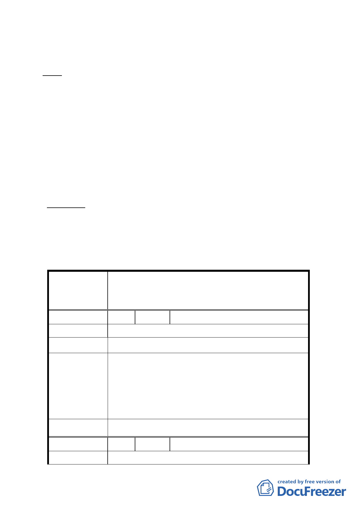

（六） 文化局、都市發展局於102年9月5日依前述第二次專案小
組審查意見，併綜整第一次專案小組審查意見與公民或
團體陳情意見，檢送修正回應資料，提請大會審議公決。
決議：
一、 本修訂案同意依據專案小組審查意見在兼顧保存文化資產、
歷史街區整體文化風貌形塑及土地所有權人開發權益等考量
下，將原公展範圍內之計畫區依日式宿舍分佈密度與原貌保
存程度區分為「文化資產核心街區」、「歷史風貌街區」、「緩
衝區」等三個層級管制。
二、 本案三個層級管制、土地使用分區變更、都市設計管制等內
容，依市府所送回應專案小組審查意見資料及本次會議所送
補充會議資料內容修正通過；併同修正計畫書案名、計畫書
文字及其圖說。
附帶決議：為落實本案歷史風貌街區形塑，未來於臺北市都市設
計及土地使用開發許可審議委員會審議案件時，請都
市發展局詳予說明本地區開發權益與風貌保存必須兼
顧，以利該委員會審議。
臺北市都市計畫委員會公民或團體所提意見綜理表
修訂臺北市大安區青田街保存區聚落風貌保存專用區細部計
案
名
畫、變更部分第三種住宅區、第三種商業區(特)為第三種住宅區
(特)(日式宿舍)及第三種商業區(特)(日式宿舍)暨劃定週邊地
區都市設計管制細部計畫案
編 號 1 陳情人 林秀蓉
陳 情 理 由 恢復原有住三一切權益。
建議辦法
為維護本地區整體風貌，本區內非屬文化資產核心地區
仍須受都市設計以及容積管控機制，使得本地區建築受
市 府 回 覆 意 見 限，並造成部分居民權益受損，故本次修訂計畫針對本
地區之都市設計以及容積管控進行修改，期能兼顧文化
資產保存與居民之土地開發利益。
委 員 會 決 議 依市府回覆意見辦理。
編 號 2 陳情人 林學淵
陳 情 理 由 維持 96 年原計畫不做任何修正。
- 10 -